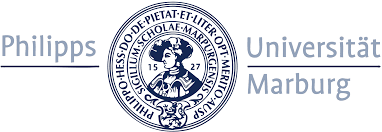

Master Degree
Philipps-University of Marburg:

I will receive my Masters Degree in Computer Science in the middle of 2022.
My focused contents were:
- Machine Learning
- Software Quality
- Compiler Construction
- Multimedial Signal Processing
- Data Visualization
- Resilient Networks
- Containerization
I have used the following Programming Languages:
- Java
- Python
- OPL
- JavaScript